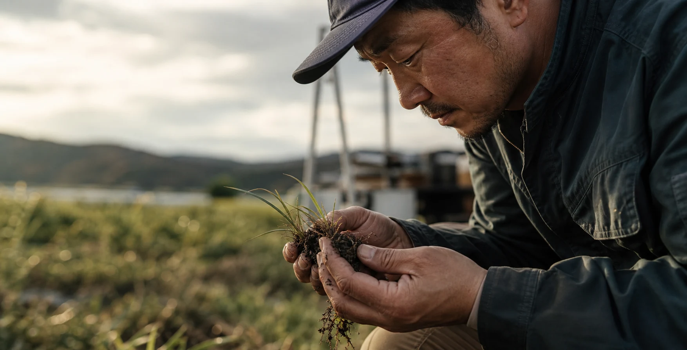

ITコンサルティング
現場の課題をヒアリングし、補助金の活用からDX計画の策定まで、伴走型で支援します。

生産から消費まで、食の未来をITで切り拓く
現場の課題をヒアリングし、補助金の活用からDX計画の策定まで、伴走型で支援します。
水温監視、土壌分析、罠の検知など、過酷な環境でも動く最適なデバイスを提供・守ります。
在庫管理、日報、販売管理など、現場のスタッフが「迷わず使える」直感的なアプリを構築します。
通信が届きにくい農地や漁港、店舗内のWi-Fi環境など、強固な通信基盤を整えます。
飲食店や加工現場に必須のHACCP義務化対応を、ITによる自動記録と専門指導で効率化します。

事務所で考えるだけでなく、実際に現場へ足を運び、状況を理解した上で最適な技術を選定します。
「機器を買って終わり」ではなく、導入後の保守からアプリのアップデートまで一貫して引き受けます。
技術的なIT知識に加え、HACCP指導員などの専門知識を掛け合わせ、業界特有のルールに即した提案が可能です。
センサーによる自動記録とAIを組み合わせ、見回りの負担軽減と、収穫・漁獲の精度を向上させます。
罠の作動をスマホへ通知。効率的な回収と、トレーサビリティの確保を同時に実現します。
面倒な温度管理や衛生記録をデジタル化。HACCP対応を『義務』から『価値』へ変えます。
広島・山口・島根・鳥取エリアで、介護情報基盤の導入支援活動を開始しました。
本日より営業を開始いたしました。お気軽にお問合せください。
2026年3月5日、株式会社bestIEsを創業いたしました。4月1日より営業を開始いたします。
「どこから手をつければいいか分からない」というご相談から大歓迎です。
貴方の現場の課題を、ぜひお聞かせください。
お問い合わせはこちら